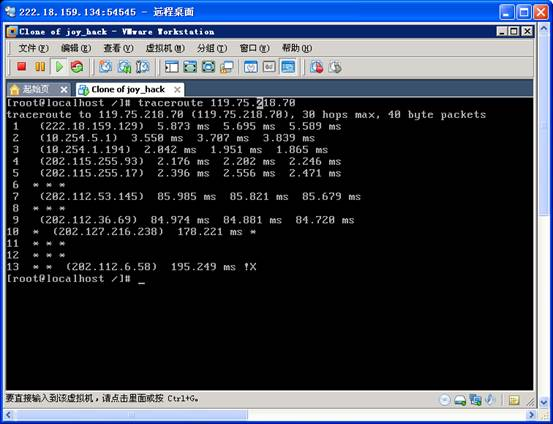

1、路由信息探测原理介绍
1.1路由
路由是指信息从源穿过网络传递到目的地的行为，在传播路径中至少经过一个中间节点。
路由通常与桥接来对比，在粗心的人看来，它们似乎完成的是同样的事。它们的主要区别在于桥接发生在OSI参考模型的第二层（数据链路层），而路由发生在第三层（网络层）。这一区别使二者在传递信息的过程中使用不同的信息，从而以不同的方式来完成其任务。
路由的话题早已在计算机界出现，但直到八十年代中期才获得商业成功。究其主要原因是七十年代的网络普遍很简单，发展到后来大型的网络才较为普遍。
1.2 traceroute原理
通过Traceroute我们可以知道信息从你的计算机到互联网另一端的主机是走的什么路径。当然每次数据包由某一同样的出发点（source）到达某一同样的目的地(destination)走的路径可能会不一样，但基本上来说大部分时候所走的路由是相同的。UNIX系统中，我们称之为Traceroute,MS Windows中为Tracert。 Traceroute通过发送小的数据包到目的设备直到其返回，来测量其需要多长时间。一条路径上的每个设备Traceroute要测3次。输出结果中包括每次测试的时间(ms)和设备的名称（如有的话）及其IP地址。
Traceroute程序的设计是利用ICMP及IP
header的TTL（Time To Live）栏位（field）。首先，traceroute送出一个TTL是1的IP datagram（其实，每次送出的为3个40字节的包，包括源地址，目的地址和包发出的时间标签）到目的地，当路径上的第一个路由器（router）收到这个datagram时，它将TTL减1。此时，TTL变为0了，所以该路由器会将此datagram丢掉，并送回一个「ICMP time exceeded」消息（包括发IP包的源地址，IP包的所有内容及路由器的IP地址），traceroute 收到这个消息后，便知道这个路由器存在于这个路径上，接着traceroute 再送出另一个TTL是2 的datagram，发现第2 个路由器...... traceroute 每次将送出的datagram的TTL 加1来发现另一个路由器，这个重复的动作一直持续到某个datagram 抵达目的地。当datagram到达目的地后，该主机并不会送回ICMP time exceeded消息，因为它已是目的地了，那么traceroute如何得知目的地到达了呢？
Traceroute在送出UDP datagrams到目的地时，它所选择送达的port number 是一个一般应用程序都不会用的号码（30000 以上），所以当此UDP datagram 到达目的地后该主机会送回一个「ICMP port
unreachable」的消息，而当traceroute 收到这个消息时，便知道目的地已经到达了。所以traceroute 在Server端也是没有所谓的Daemon
程式。
Traceroute提取发 ICMP TTL到期消息设备的IP地址并作域名解析。每次，Traceroute都打印出一系列数据,包括所经过的路由设备的域名及 IP地址,三个包每次来回所花时间。
Traceroute 有一个固定的时间等待响应(ICMP TTL到期消息)。如果这个时间过了，它将打印出一系列的*号表明：在这个路径上，这个设备不能在给定的时间内发出ICMP TTL到期消息的响应。然后，Traceroute给TTL记数器加1，继续进行
2、traceroute命令详解
其最简单的使用方法为“Traceroute
地址”，地址为目标服务器的域名或IP地址。

从以上结果可看出到达目标经过了13个节点并且包传输的很快(低于100ms)。第一列显示了节点数，第一列最后一行为到达最终目标所经过的节点总数(在我们的例子中到达最终节点，www.baidu.com了13个节点)。其后的三列为各节点的响应周期。如果在其中出现星号则表示超时(这是说在限定包存活周期内目标没有响应) 。在各列中如果都小于100ms则可认为是不错的状态。在后面的两列显示了路途中的IP地址。
Traceroute的用法为: Traceroute [options] <IP-address or
domain-name> [data size]
[options]的内容有:
[-n]:显示的地址是用数字表示而不是符号
[-v]:长输出
[-p]:UDP端口设置(缺省为33434)
[-q]:设置TTL测试数目(缺省为3)
[-t]:设置测包的服务类型
[data
size]:每次测试包的数据字节长度(缺省为38)